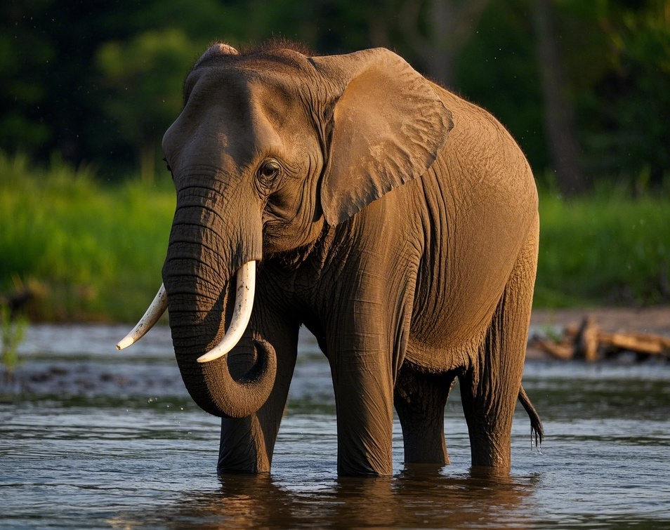
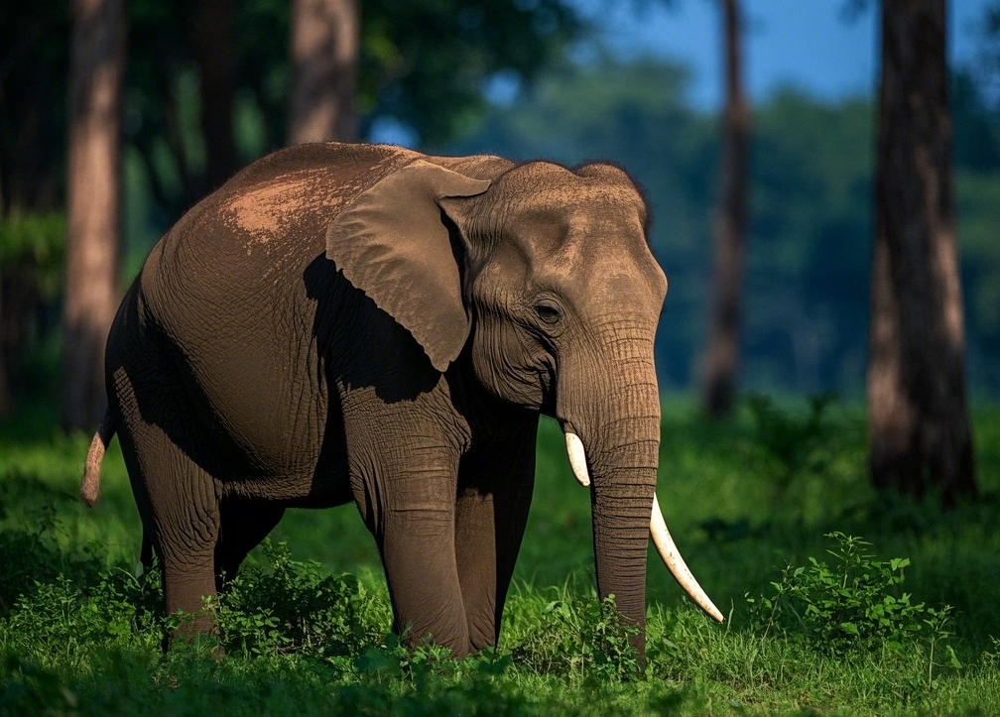
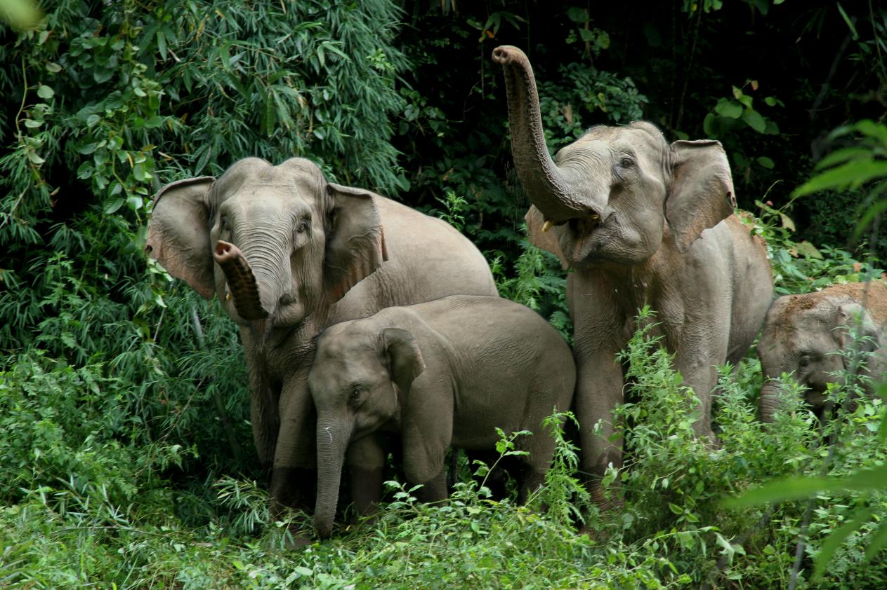

简介
亚洲象（学名：Elephas maximus），是长鼻目象科亚洲象属的哺乳动物，也是亚洲现存的最大陆生动物。亚洲象是中国一级保护动物，同时也被列入《濒危野生动植物种国际贸易公约》附录Ⅰ。亚洲象体型庞大，皮肤厚实，呈深灰色至棕色，具有长长的鼻子和大耳朵，其大耳朵的形状有点像印度次大陆的轮廓。
栖息地
亚洲象主要生活在南亚和东南亚的热带、亚热带地区，在中国，它们主要分布在云南的西双版纳、普洱和临沧等地。它们喜欢栖息在热带雨林、季雨林和山地森林中，这些地区通常有丰富的水源和茂密的植被。亚洲象的栖息地需要有足够的空间供它们活动和觅食，然而，由于人类的森林砍伐、农业开垦和城市化进程，亚洲象的栖息地不断缩小和碎片化，这严重威胁了它们的生存。
饮食
亚洲象是草食性动物，它们的食物种类非常丰富，包括各种草类、树叶、树皮、果实和竹笋等。一头成年亚洲象每天可以消耗150至300公斤的食物，为了获取足够的食物，它们每天需要花费大量的时间觅食。亚洲象的长鼻子不仅是它们获取食物的重要工具，还可以用来吸水和喷洒在身上降温。此外，它们有时也会到河边或盐沼地舔食盐分，以补充身体所需的矿物质。
保护
由于栖息地丧失、非法捕猎和人象冲突等原因，亚洲象的数量正在急剧减少，被列为濒危物种。中国政府和国际组织采取了一系列措施来保护亚洲象及其栖息地。在中国，建立了多个亚洲象自然保护区，如西双版纳国家级自然保护区等，加强了对亚洲象的监测和保护。同时，开展了人工繁育和野化放归项目，以增加亚洲象的种群数量。国际上，也通过各种宣传和教育活动，提高公众对亚洲象保护的意识，并加强了对非法象牙贸易的打击力度。